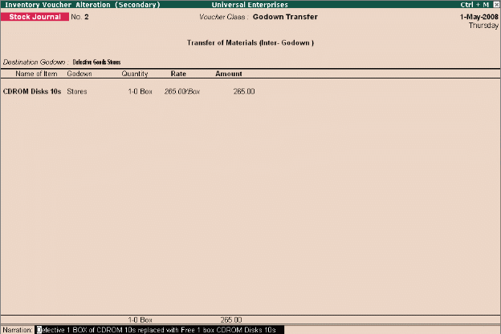

Stock transfers to Godowns
Tally.ERP 9 allows you to transfer materials from one Godown to another. The transfer of materials is done using Stock Journals. Tally.ERP 9 also provides you the facility to create voucher class, which help in simplifying the transfer of materials between godowns.
To transfer materials (Stock Transfer),
Go to Gateway of Tally > Inventory Vouchers > Alt+F7 (Stock Journal)
# Select Stock Item in Source column and the Godown particulars
# Select Stock Item and Godown particulars in Destination column
To transfer materials using Voucher Classes,
Step 1: Create Voucher Class Go to Gateway of Tally > Accounts Info./Inventory Info. > Voucher Types > Alter
# Select Stock Journal, tab down to Name of Class field and specify Class name (e.g. Godown Transfer)
# Set Use Class for Inter-Godown Transfers to Yes
Step 2: Create Stock Transfer Journal Voucher Go to Gateway of Tally > Inventory Vouchers > Alt+F7 (Stock Journal)
# Select Godown Transfer Class from Voucher Class List
# Select Destination Godown details, stock items, Source Godown
